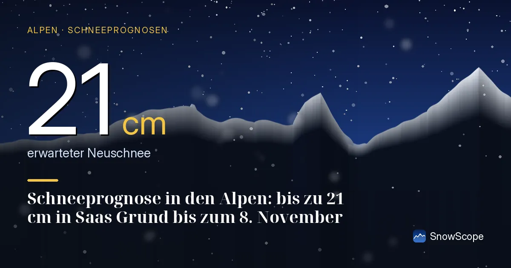

Schneeprognose in den Alpen: bis zu 21 cm in Saas Grund bis zum 8. November
In den nächsten drei Tagen bringt Schneefall in den Alpen Neuschnee in höhere Lagen, Saas Grund gewinnt bis 8. November bis zu 21 cm. Die stärksten Fälle kommen Freitag und Samstag, aber die Nullgradgrenze variiert stark zwischen den Skigebieten – einige sehen Regen in der Mittellage, während andere oben Pulver bekommen.
Die Live-Schneeprognose für Saas Grund in der SnowScope-AppSchneehöhen, Pulverschnee-Alarme und 3D-Karte, gratis.
Wann der Schnee kommt
Freitag, 6. November ist der stärkste Tag: Saas Grund bekommt 14 cm, Grindelwald 14 cm und Zermatt 14 cm. Samstag, 7. November bringt mehr: Saas Grund noch 7 cm, Pescegallo 11 cm und Alpe Devero 5 cm.
Bis Sonntag, 8. November zieht sich das Tiefdrucksystem ab und der Schneefall stoppt an allen fünf Skigebieten. Der Zeitpunkt ist wichtig für deine Reisepläne: Wenn du Freitag oder Samstagfrüh nach oben fährst, skiest du direkt in den Neuschnee.
| Skigebiet | Schneehöhe | Neuschnee, 72 h | Erwartet, nächste Tage | Gipfel |
|---|---|---|---|---|
| Saas Grund | 27 cm | 8 cm | 21 cm | 3.142 m |
| Grindelwald | 20 cm | 0 cm | 18 cm | 2.394 m |
| Pescegallo | 1 cm | 3 cm | 18 cm | 1.984 m |
| Zermatt | 23 cm | 10 cm | 18 cm | 3.872 m |
| Alpe Devero | 19 cm | 4 cm | 16 cm | 2.201 m |

Die Höhe entscheidet über die Schneesorte
In Saas Grund liegt die Nullgradgrenze am Freitag zwischen 2.350 m und 2.640 m, die Mittellage (2.347 m) sitzt also direkt an der Grenze. Die oberen Hänge über 2.700 m bekommen trockenen Pulver, aber die mittleren Pisten können bis zum Nachmittag sulzig werden. Die Talstation auf 1.553 m bekommt Regen.
In Grindelwald steigt die Nullgradgrenze am Freitag auf 1.810 m bis 2.860 m – die komplette Spannbreite des Skigebiets. Obere Pisten auf 2.394 m bleiben verschneit, aber die untere Hälfte riskiert Regen oder Nassschnee. Samstag fällt sie auf 1.770 m bis 2.180 m, so verbessern sich die Bedingungen auf den oberen Hängen.
Pescegallo liegt mit 1.984 m tief. Am Freitag liegt die Nullgradgrenze zwischen 1.820 m und 2.790 m: Die Bergspitze bekommt Schnee, aber der Großteil des Skigebiets sieht Regen oder Sulz. Samstag bleibt es kalt: 1.820 m bis 1.930 m bedeutet, der ganze Berg wird verschneit und Pulver hält den ganzen Tag.

Schneehöhen in der Region heute
Saas Grund führt mit 27 cm in den oberen Lagen an. Zermatt hat oben 23 cm, Alpe Devero 19 cm und Grindelwald 20 cm. Pescegallo ist dünn mit nur 1 cm, daher wird der Neuschnee dort willkommen sein, aber achte darauf, dass keine Felsen unter der Oberfläche liegen.
Die schneebedeckte Fläche in den Alpen wuchs schnell: von 35.390 km² vor zwei Tagen auf 46.450 km² jetzt. Nach dem Schneefall zeigt die Prognose 31.930 km² am 8. November – ein Rückgang, weil tiefere Lagen sich erwärmen und ihre dünne Frühjahrsbasis verlieren.
Wie das mit früheren Wintern vergleicht
In der Mittellage (2.347 m) in Saas Grund sind heute 2 cm Schnee – das ist tiefer als in 11 der letzten 46 November an diesem Datum. Dieser Winter begann mit Schnee früher als im Durchschnitt.
Pescegallo läuft dünn. In seiner Mittelhöhe (1.719 m) zeigt die Prognose heute 0 cm, was tiefer ist als in 21 früheren Jahren, aber immer noch eine schwache Basis. Die Frühsaison braucht Geduld und Vorsicht.
Wo du jeden Tag fahren solltest
Freitag: Fahre zu Saas Grund, Zermatt oder Alpe Devero, wo Neuschnee in höheren Lagen trocken sein wird. Meide untere Pisten, wo die Nullgradgrenze Regen durchlässt.
Samstag: Pescegallo verbessert sich, wenn die Nullgradgrenze sinkt. Die oberen Hänge von Grindelwald profitieren auch von der kälteren Luft. Saas Grund und Zermatt bleiben solide.
Sonntag: Der Schneefall stoppt, aber Pulver bleibt auf nordseitigen Hängen an allen Skigebieten. Am Montag zieht sich das System ab.
Tipps für Skifahrer
- Am Freitag nutze die höchsten Lifte in Grindelwald und Pescegallo, um über der Nullgradgrenze zu bleiben und Nassschnee auf unteren Pisten zu vermeiden.
- Samstag ist Pescegallos bester Tag für Pulver – die Nullgradgrenze bleibt den ganzen Tag unter 1.930 m, also ist der ganze Berg winterlich.
- Neuschnee hält am längsten auf schattigen, nordseitigen Hängen. Südseitige Pisten werden in der Sonne bis zum Mittag weich.
- Bevor du abfahrtsgelände fährst, prüfe das aktuelle amtliche Lawinenbulletin für deine Region.
- Prognosen drei Tage im Voraus können sich verschieben. Schau die SnowScope-Karte Donnerstagabend noch mal an, bevor du entscheidest, wo du Freitag fahren willst.
Zu diesen Zahlen
Die Schneehöhen der Skigebiete sind der meiste Schnee in den oberen Hängen am angegebenen Tag; es sind Schätzungen für eine Fläche, keine Messung an einem Punkt. Prognosen können sich ändern. Lies vor dem Freeriden immer den offiziellen Lawinenlagebericht.
Offizielle Lawinenlageberichte: EAWS (Alps)
Diesen Bericht zitieren
Für Forschung, Lehre oder Presse: Zahlen und Grafiken sind unter CC BY 4.0 mit dieser Quellenangabe frei nutzbar.
SnowScope (2026), Schneeprognose in den Alpen: bis zu 21 cm in Saas Grund bis zum 8. November, https://snowscope.app/blog/de/2026/11/alps-snow-forecast-5-november-2026.html, abgerufen am 2026-11-05
SnowScope (Atlas Labs). (2026, November 5). Schneeprognose in den Alpen: bis zu 21 cm in Saas Grund bis zum 8. November. SnowScope snow reports. https://snowscope.app/blog/de/2026/11/alps-snow-forecast-5-november-2026.html
BibTeX
@misc{snowscope2026alpssnowforecast5novembe,
author = {{SnowScope (Atlas Labs)}},
title = {Schneeprognose in den Alpen: bis zu 21 cm in Saas Grund bis zum 8. November},
year = {2026},
month = nov,
howpublished = {\url{https://snowscope.app/blog/de/2026/11/alps-snow-forecast-5-november-2026.html}},
note = {Published 2026-11-05 10:27 UTC; accessed 2026-11-05}
}· CC BY 4.0 · Methoden, Daten und Werkzeuge →
Saas Grund: Schnee und Temperatur nach Höhe, dieser Winter vs letzter (Werkzeuge) →
Saas Grund folgen
Gratis: eine Nachricht, wenn Neuschnee kommt, und jeden Morgen die Vorhersage.